Amazon Climate Pledge Friendly
Lead UX Designer - 2/2023 - 3/2024
Project Overview
Climate Pledge Friendly is Amazon's flagship sustainability shopping program. We've partnered with over 50 third party trusted sustainability certifying organizations to provide customers with tangible and fact-based reasons why a product is able to be considered a more sustainable option.
Project Goal
The Climate Pledge Friendly CX had remained largely unchanged since it's launch in 2020, and while it was receiving good traction with our customers, we were facing key headwinds as a program related to customer comprehension, localization challenges across our international marketplaces, and growing regulatory concerns in the European Union. Based on these factors, we took it upon ourselves to improve the CPF customer experience and set up a scaleable system that provides more clarity and transparency for our customers.
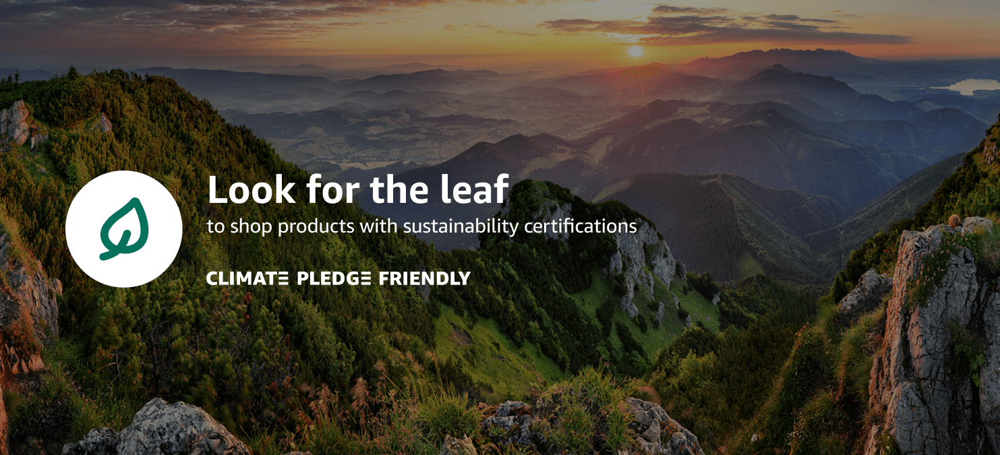
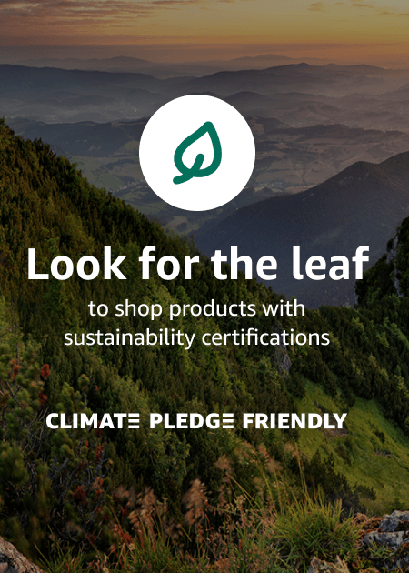
Setting the stage
The existing customer experience was functional, but was a bit convoluted. Our suatainability claim substantiation was centered around the certifications that a product had, not the reasons why we considered it more sustainable. We heard time and again form customers that they simply wanted an "easy mode". They wanted to know tangible and easy to understand reasons why these claims were made.
The other issue was localization in our international marketplaces. the term "Climate Pledge Friendly" does not translate well in many languages, including French, German, and Spanish. We knew we needed a way to decouple our CX from the program name, and update our badging to sue language that would be easily recognizable in all marketplaces across the world.
We also faced increasing regulatory risks from the EU regarding how sustainability claims are presented. This is an effort to limit "greenwashing", to which end the EU had already imposed penalities on some of our competitors. Transparency was key here.
The other issue was localization in our international marketplaces. the term "Climate Pledge Friendly" does not translate well in many languages, including French, German, and Spanish. We knew we needed a way to decouple our CX from the program name, and update our badging to sue language that would be easily recognizable in all marketplaces across the world.
We also faced increasing regulatory risks from the EU regarding how sustainability claims are presented. This is an effort to limit "greenwashing", to which end the EU had already imposed penalities on some of our competitors. Transparency was key here.
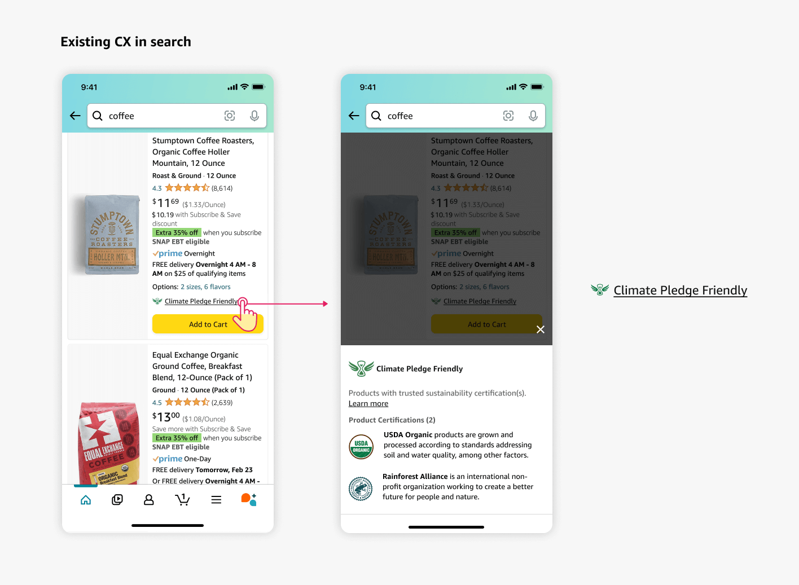
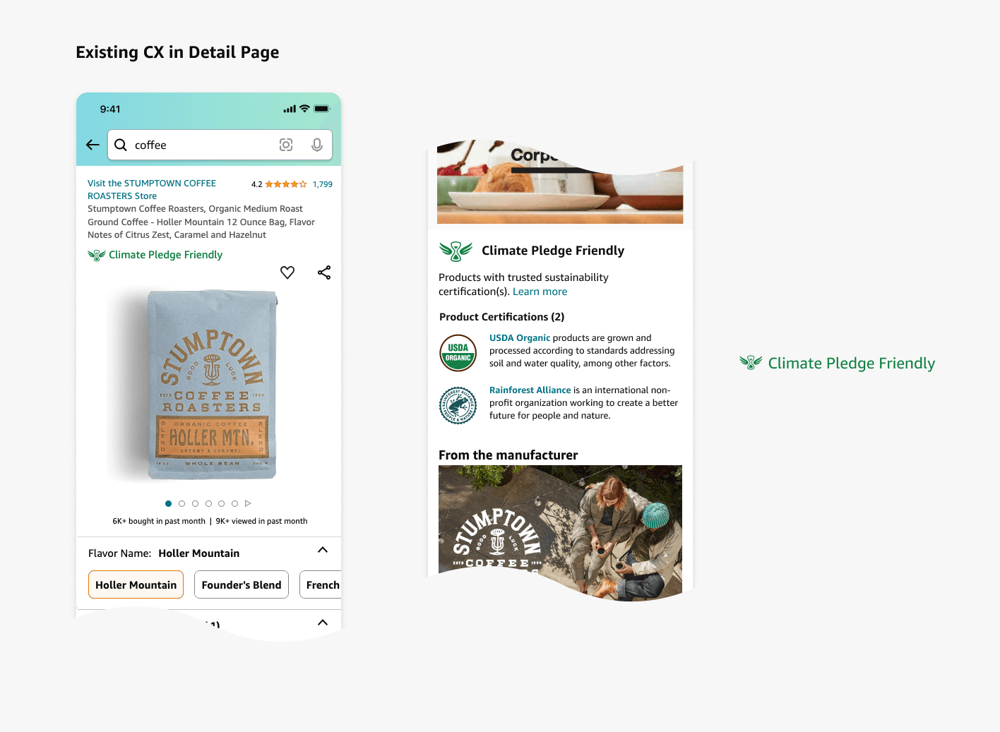
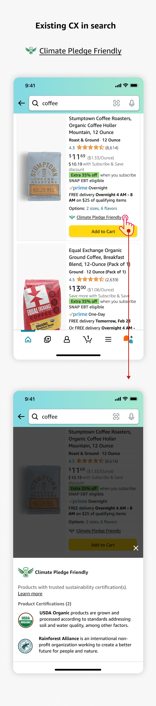
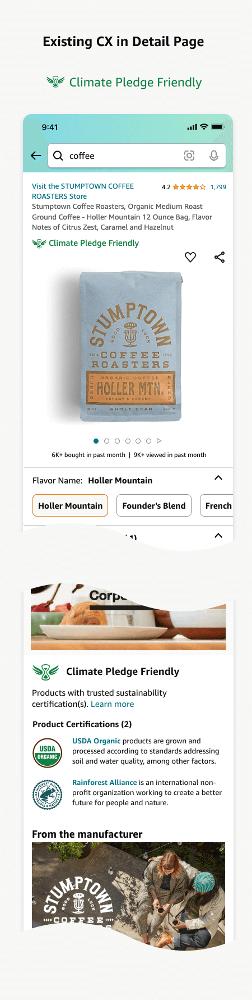
Badging framework clarity
Knowing that our customers were more interested in the "why" a product was considered more sustainable, and not the "how", we set about to rethink our badging framework. International localization and clear communication were key requirements. We tested multiple strings for our badges, and ran risk assessments with Amazon legal to narrow our options down to several options. We then tested these badge strings with customers in the US and EU, looking for increases in comprehension, glance views, as well as overall conversions.
Another aspect we considered was the existing CPF logo, the hourglass with wings mark. This was consistently creating confusion amongst our customers, and we knew we needed to address it. We worked with Rio, the Amazon Shopping Design system team to create a leaf icon that meets the standards of the design system and provides a clearer visual cue that an item has sustainability claims. This allowed us to lean into a very recognizable icon to denote these sustainability claims, while allowing us to de-emphasize the CPF brand without walking away from it completely.
Another aspect we considered was the existing CPF logo, the hourglass with wings mark. This was consistently creating confusion amongst our customers, and we knew we needed to address it. We worked with Rio, the Amazon Shopping Design system team to create a leaf icon that meets the standards of the design system and provides a clearer visual cue that an item has sustainability claims. This allowed us to lean into a very recognizable icon to denote these sustainability claims, while allowing us to de-emphasize the CPF brand without walking away from it completely.
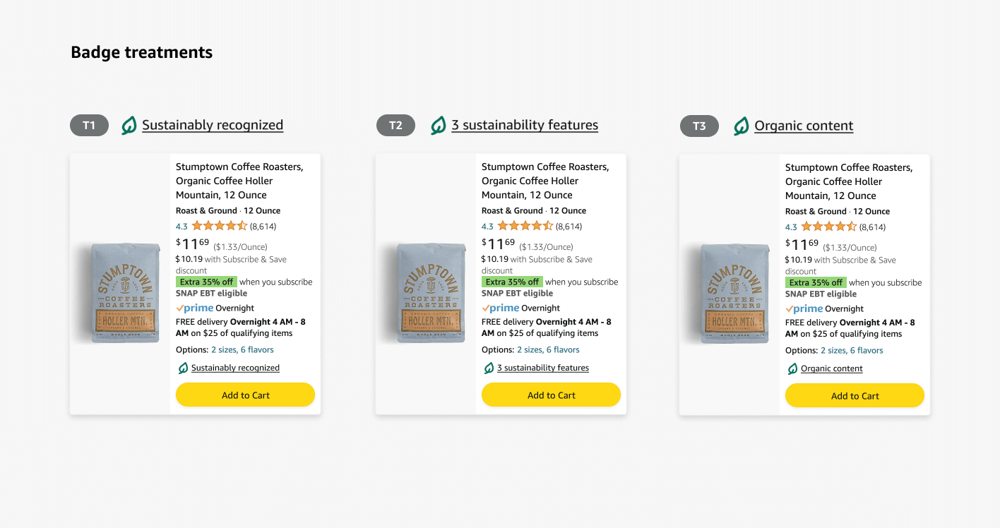
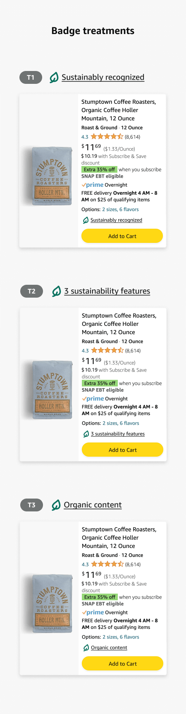
Experiment results
In the end, our customers preferred "X sustainability features". "X" denoting the number of sustainability features associated with a product's claims. CPF provides 14 different features, with examples such as "Organic content", "Worker well-being", and "Animal welfare". These features denote the reasons "why" a product is considered more sustainable, and are in line with the feedback we receieved from our customers about transparency and clarity in our sustainability claims.
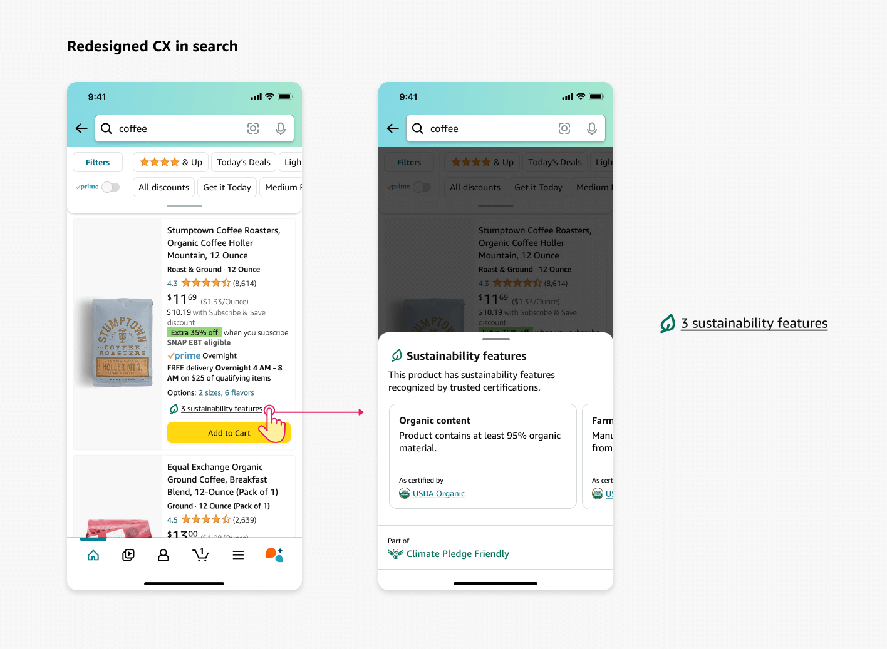
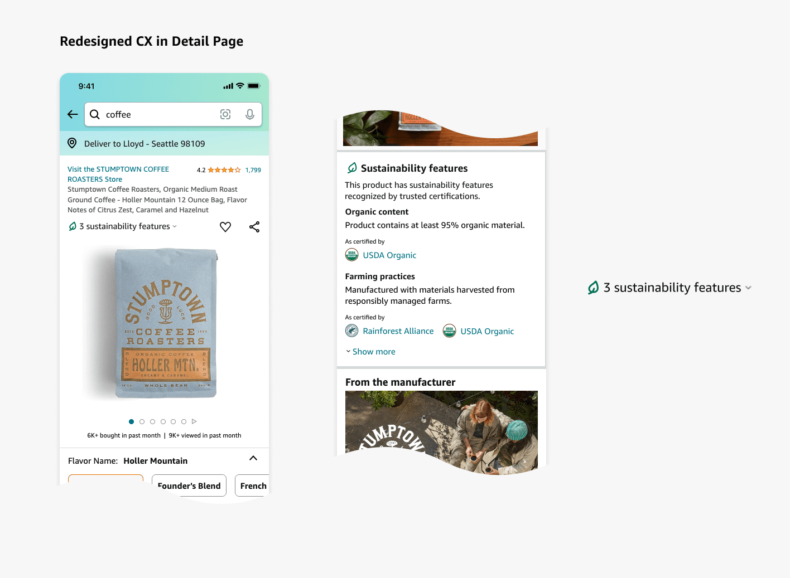
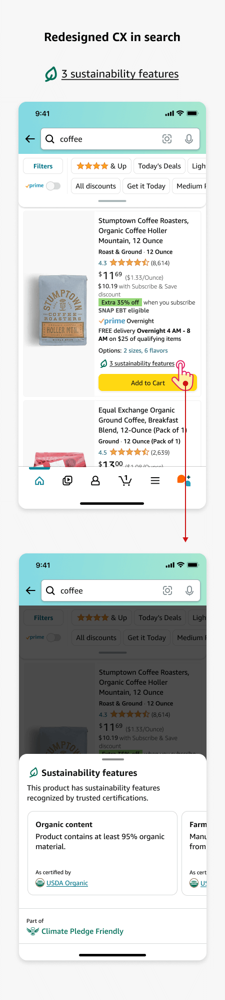
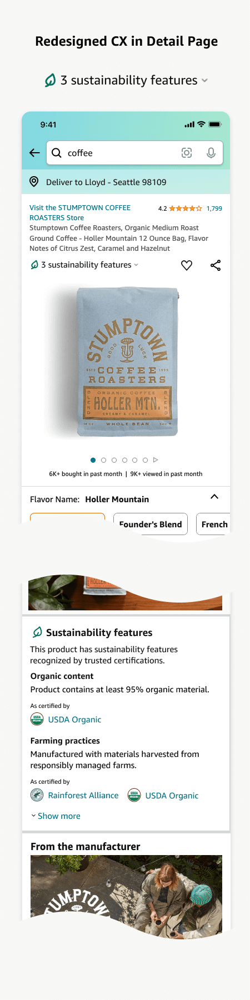
KPIs
Trust in the badge reached an all-time high on Search, reversing a 3 year negative trend Customer trust perception increased by +604bps on Search (44.1%) and +189bps on Detail Page (36.1%), reversing a decline that started in 2021 (see Figure 1). The results confirmed our hypothesis that the new badge would build long-term customer trust in the program, in line with our vision to make Amazon earth’s #1 trusted destination for sustainable shopping.
The new badge is easier to understand and increases certification credibility Customers were -400bps less likely to select ‘I don’t understand how the sustainability features badge is calculated / assigned’ (from 14.7% to 11.7%), and -300bps less likely to select ‘I have concerns about the credibility of the certifications in the program’, both of which were previously our top trust barriers.
Customer confidence reached a three-year high, matching levels from program launch Customers selecting ‘This feature is not important to my confidence at all’ decreased -554bps (from 20.1% to 14.6%), reversing a three-year trend and returning to a level not seen since program launch (14.1%).
The new badge is easier to understand and increases certification credibility Customers were -400bps less likely to select ‘I don’t understand how the sustainability features badge is calculated / assigned’ (from 14.7% to 11.7%), and -300bps less likely to select ‘I have concerns about the credibility of the certifications in the program’, both of which were previously our top trust barriers.
Customer confidence reached a three-year high, matching levels from program launch Customers selecting ‘This feature is not important to my confidence at all’ decreased -554bps (from 20.1% to 14.6%), reversing a three-year trend and returning to a level not seen since program launch (14.1%).